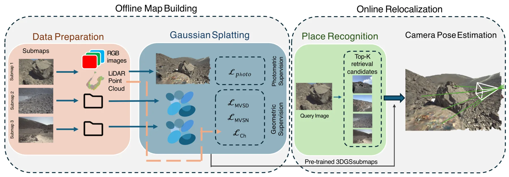
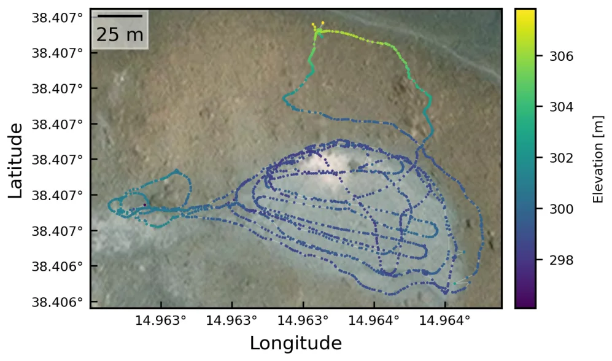
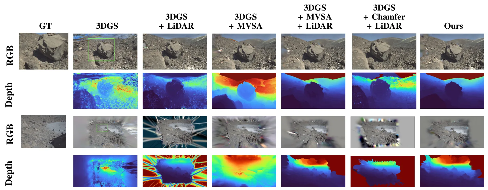
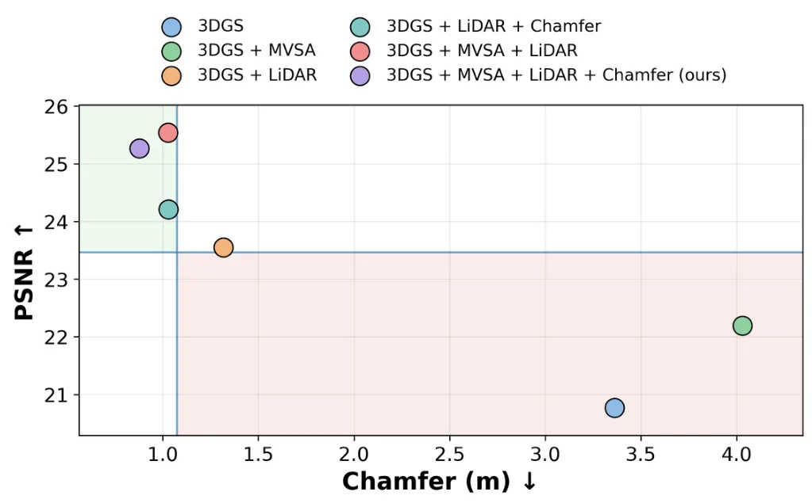
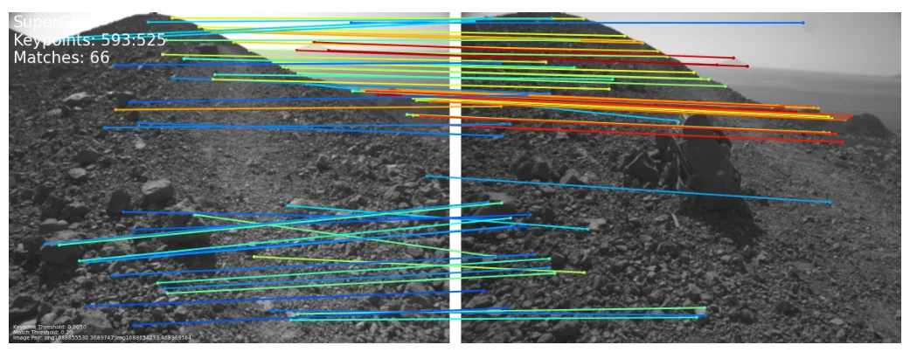
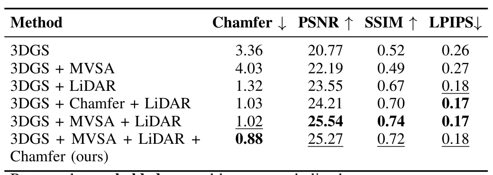
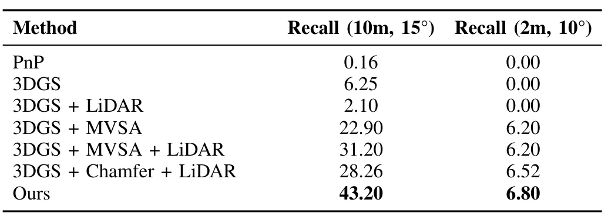

通过新视角合成在感知混淆与低纹理环境中实现稀疏视角视觉重定位Visual Relocalization from Sparse Views in Aliased and Low-Texture Environments via Novel View Synthesis
直接解决困难环境中的全局重定位，并把多模态几何监督与 3DGS pose optimization 结合且公开代码；摘要未给量化结果，初始化范围、在线延迟和局部极值风险待正文验证。
一句话工作总结
以 MVS 与 LiDAR 深度共同监督 3DGS 地图，再对地图直接优化单图 6-DoF 位姿，面向低纹理和稀疏弱重叠视角重定位。
摘要
在类行星地形中，低纹理、感知混淆、强照明变化，以及前向 rover 运动和自由行驶方向造成的稀疏弱重叠视角，会使 image-to-image 和 image-to-map matching 明显退化。该方法不再依赖经典 correspondence pipeline，而是针对由 3D Gaussian Splatting 构建的 differentiable map 直接估计 camera pose。核心是 geometry-aware training：联合使用 photometric 与 geometric losses，其中几何监督由 MVS depth 和 LiDAR depth 共同提供。联合优化使 3DGS 更贴合真实场景几何，从而改善光度/几何一致性，并提高单图 6-DoF pose estimation 的鲁棒性与精度。类行星环境实测验证了其在困难条件下的重定位增益。
Visual localization becomes extremely challenging in planetary-like terrains characterized by low texture, perceptual aliasing, harsh illumination, and sparse, weakly overlapping viewpoints induced by forward rover motion and unconstrained driving directions. Under these conditions, state-of-the-art image-to-image and image-to-map matching pipelines suffer significant performance degradation. In this work, we propose a visual relocalization method that departs from classical correspondence-based pipelines by directly estimating camera poses against a differentiable map representation built with 3D Gaussian Splatting (3DGS). Our key contribution is a geometry-aware training strategy that combines photometric and geometric losses, where the geometric supervision is provided for the first time by combining multi-view stereo (MVS) and LiDAR depths. We show that this joint optimization produces a 3DGS model that better fits the underlying scene geometry, leading to improved photometric and geometric consistency and more robust, accurate single-image 6-DoF pose estimation. Extensive experiments on data acquired in planetary-analog environments validate the effectiveness of our approach, showing substantial gains in relocalization accuracy under challenging conditions. Code is available at https://github.com/DLR-RM/multimodal-gsplat-relocalization.
中文解读摘录
- 作者：Maria Peribañez, Javier Civera, Rudolph Triebel, Riccardo Giubilato
- 价值判断：针对低纹理、重复外观、强照明变化和弱重叠视角，绕开脆弱的 image-to-image/image-to-map correspondence，直接在可微 3DGS 地图上优化单图 6-DoF pose。
- 技术要点：以 photometric 与 geometric losses 联合训练 3DGS；几何监督首次组合 MVS depth 与 LiDAR depth，目标是让 Gaussian map 同时改善外观和底层几何一致性，再服务于直接相机位姿估计。
- 结果边界：摘要称类行星场景实验显著提高重定位精度，但未给出数字。应重点核查初始化捕获范围、每帧优化时延、错误局部极值、LiDAR/MVS 深度冲突处理，以及相对纯 LiDAR map、NeRF/3DGS relocalization 和 feature baseline 的公平比较。
- 链接：arXiv · PDF · 代码
图表/页面预览

{kind=link}

{kind=link}

{kind=link}

{kind=link}

{kind=link}

{kind=link}

{kind=link}
